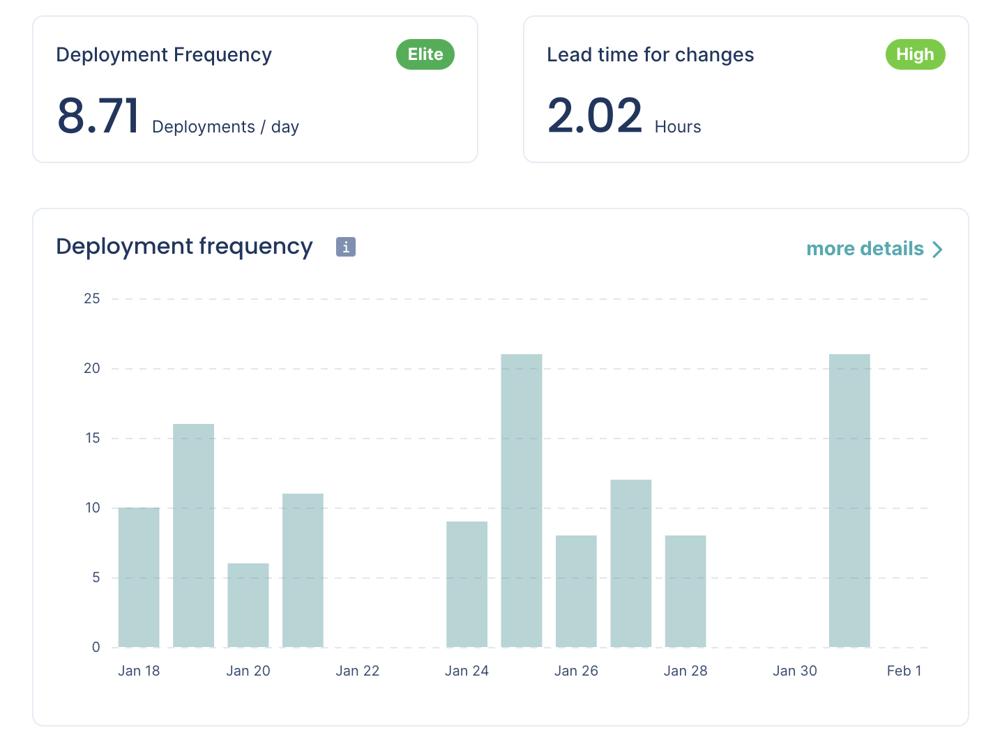
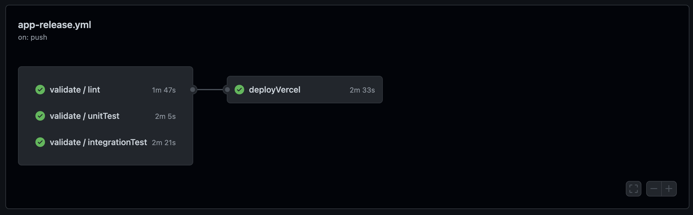

The Plot technology strategy
Jun 20, 2022 · 9 minute read · CommentsLeadership
Technology strategy series:
- The importance of solid technology strategy and principles
- 4 steps to create a solid technology strategy
- The Plot technology strategy

I wrote this article as part of my role as VP Engineering at Plot. I wanted to share it here as an example of what a technology strategy could look like. It was our best guess at the time and by no means perfect!
At Plot, we want a world in which technology enables everyone to design learning experiences that accelerate human thought, action & achievement.
That is our product vision.
Our product mission is to achieve this vision with software.
🌍 Gathering context
The technology vision & strategy is at the service of the product one, so that was the natural starting point. We will build software that enables everyone to design learning experiences that accelerate human thought, action & achievement.
Next, I looked at the time horizon. How long-term should our strategy be? Should we plan for one year? 2? 10? Given our early stage, I set a 1-year horizon.
What followed was a context-gathering exercise involving conversations with team members in and outside of engineering.
🤔 Problems and opportunities
Thinking about the challenges ahead will help us de-risk and overcome them.
- Small Engineering team. 4 individual contributor software engineers (ICs) and one manager. Capacity is limited, but the reduced communication overhead and blank slate will help the team move fast.
- The team has to build the entire product. Fast. On the one hand, there is no technical debt, and we can explore a more modern tech stack. On the other hand, there is a lot to be built quickly.
- High uncertainty. This uncertainty comes from the fact that we’re an early-stage startup whose product will have a high rate of change.
🎯 Goals
What goals do we need to hit to make significant progress toward our vision?
- Ten users have tested our tech product by the end of Q1.
- Create the technology mechanisms that enable the Product team to move fast and change direction after testing.
- Craft a tech product that feels great to use because of its performance and UX.
- Enable a data-driven culture at Plot. Everyone can self-serve user analytics to make decisions.
🛣️ Roadmap
What are we aiming to build?
During Q1 2022, we will build a slice of our tech product, which will allow learning designers to create and sequence content, activities, and assessments.
Once we put the product in front o users, gather feedback and run more interviews, we will decide what comes beyond. It’s okay. We accept that uncertainty is high now and are ready for that!
📊 Strengths and weaknesses of engineering
What skillset and expertise do we currently have? What are we missing? Teams with a clear insight into this will be better equipped to plan and align company needs to folks’ development interests.
Strengths
- Great collective experience building successful products from scratch in high uncertainty environments.
- The team has already worked together at Aula. We are not a group of people who know nothing about each other and have never collaborated.
- As we have a blank slate, there is no technical debt accumulated.
- We are not constrained by a particular technology stack.
- We have a diverse set of individuals with different educational backgrounds. Diverse and inclusive teams build better products.
Weaknesses
- The team comes from Aula, a company at a very different stage, with a product already used in production with paying customers. The new context requires a mindset shift from everybody.
- Some team members are learning small parts of our tech stack. There will be a learning curve, and we will make mistakes along the way. We expect the boost from the choices to make up for this within a short enough time frame.
- We are all full-stack engineers. On average, there is a slight skew towards the front-end. Back-end and infrastructure knowledge is not spread enough.
🙌 Principles
Following the above context, we established a basic set of principles.
- Spend close to 100% of our time building the actual product.
- Short feedback loops lead to quality and velocity.
- No technical debt is a bad thing.
- Push complexity as much into the future as possible.
- Tools and practices that lead to a pit of success.
🔭 The vision
We landed on the following technology vision with all of that context, which we believe will lead us to realise the product vision.
An Engineering team that can move lightning fast to create and continuously deliver a high-quality technology tool that makes anybody a world-class learning designer.
⛵ The strategy
The following areas will help us become a team that can move lightning fast to create and deliver a high-quality technology tool that makes anybody a world-class learning designer.
⚙️ Infrastructure as a service
We will invest heavily in Infrastructure as a Service (IaaS). We are happy to pay more per unit of compute and give up some flexibility by using managed services, as long as it helps us spend close to 100% of our time building the product. This is particularly true when the service has a migration path to a cheaper, self-managed alternative.
Pricing models for services like Vercel and AWS Lambda are all usage-based. Having an expensive infrastructure bill because we have too many users will be a great problem to have. Not getting enough users because the team spent weeks setting up and scaling infrastructure is unacceptable.
For example, we chose Vercel and serverless because they make zero-configuration continuous deployment and scalability very easy.
🚢 Continuous deployment
Continuous deployment (CD) means that every time a developer makes a code change, a new version of the application is deployed automatically with zero human intervention.
The time between code change and a new version being deployed should ideally stay below 5 minutes.
Additionally, we will leverage Continuous integration (CI). As changes are incorporated, we run automated tests that validate them.
Finally, we will use feature toggles to deploy partially completed features without releasing them to some or any users.
Some of the benefits of the practices above are:
- Deployments are smaller, which results in a reduced risk of introducing regressions. In other words, increasing deployment frequency decreases failure rate and mean time to restore.
- Feature toggles maximise the chances of having a releasable feature sooner as small batches of changes are continuously integrated into production. This means earlier feedback and re-risked projects. If we run out of time, we can decide whether or not to release what we have. Not using toggles means we must wait for features to be fully ready before integrating them into the main codebase. The integration cost skyrockets, and we will not even have the choice of releasing what we have.
Thanks to CD, we are deploying code to production over eight times a day on average.

👩💻 Excellent developer experience
We will not invest in complex solutions too early and strive for simplicity at all times. However, we will invest in excellent developer experience by choosing pit of success tools, i.e., tools that make it very hard to do the wrong thing.
Here are a few examples of what this looks like.
- Monorepo for dependency management.
- Tests run in seconds, not minutes, with a local database.
- Easy to set up and work in a local environment with no network connectivity.
These practices increase developer productivity and shorten feedback loops. As a consequence:
- Tests are run more often, better quality tests, and fewer bugs.
- It’s easier to make changes. Therefore batches are smaller, and the risk goes down.
- Developers move faster!
At the moment, a developer can set up their development environment in 15 minutes, and a build/test/deploy cycle takes 3 minutes.

🏦 Technical debt
We are a new organisation working on the first iteration of a greenfield product. Unlike us, most organisations are slowed down by piles of tech debt. There is certainly a balance to be struck between moving fast and incurring too much technical debt. As Martin Fowler writes, no technical debt at all is bad!

We will ensure that the debt we incur falls within the Prudent and Deliberate quadrants. A few of our delivery process practices, including pairing, technical discussions, code reviews, and our definition of done, help us avoid the Inadvertent and Reckless quadrants.
Whenever we want to address the technical debt that we do incur, we will do so in one of two ways:
- Following the scout rule as we work on the codebase.
- As a preparatory refactor. Since preparatory refactors can take a bit more time, they require the team’s agreement, including PM and Design.
💎 UI strategy
Plot will have a rich UI that needs to feel great to use and have a consistent aesthetic. Our technology choices must enable us to move super fast, as time to market is of the essence, and feedback can potentially result in significant changes.
Our bet is TailwindCSS combined with HeadlessUI. The consequences are:
- The best developer experience of any styling framework.
- Developers can style UIs faster.
- Less overhead than popular alternatives (Material UI) will help achieve faster loading times and runtime performance.
- Higher consistency as long as we are disciplined about theme usage.
- Pit of success for accessibility.
🤗 A trust-based inclusive team that is continuously improving
We are fortunate enough to have a diverse engineering team in a few ways, including educational backgrounds. As we build an ed-tech product, this can be a competitive advantage. However, taking advantage of this does not happen by default.
Through strong but loosely held opinions and recognising our mix of expertise, we will make better decisions and reach better outcomes. Truly listening, allowing others to voice their opinions, and sharing knowledge are part of the core expectations of engineers in the team.
We commit to regular retrospectives to continuously iterate and perfect how we work together to achieve our goals.
Individuals in the team will frequently pair to share knowledge, learn from one another and streamline development as no peer review is required in those cases.
📈 User analytics
At Plot, we want to foster a data-informed culture, where anyone in the company can self-serve usage data from our tech product to inform their decisions. Be it making changes to the tech product itself or deciding on copy for the marketing website. At the same time, we don’t want to spend any time at all, if possible, setting up a custom analytics pipeline.
We are taking a few actions to achieve this:
- Amplitude will be our user analytics tool. It’s an off-the-shelf solution, easy to learn, and everyone in the company will have access to it.
- Analytics is part of our Definition of done. We discuss the questions we want answers to during refinement.
- We will not use auto-tracking to solve the “we forgot to track this” problem because it still requires someone to sift through events to tag them, and they are incredibly brittle to app design changes.
🙌 Hope this was useful.
It was amazing to see the team come together, show exceptional ownership, and make critical technical decisions based on the principles we set. Solid strategy and principles genuinely are one of the most effective ways you can scale yourself!